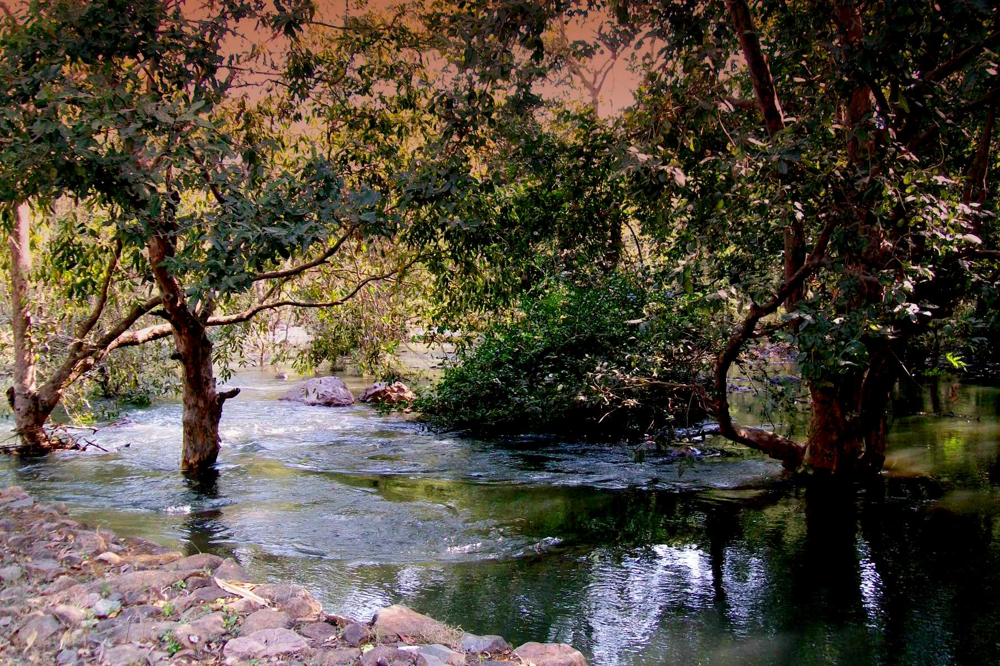

.The West Champaran district in the Indian state of Bihar is home to the Udaypur Wildlife Sanctuary.
.It is located on 8.74 sq km of land and was established in 1978.
.It is located in the moist deciduous wood ecoregion of the Lower Gangetic Plains.
.The wildlife sanctuary is primarily a wetland and is situated on an oxbow lake in the Gandaki River floodplain.
.A wide diversity of permanent and migratory aquatic birds inhabit the place.
.The sanctuary contains sections of Khair-sissoo forest, dry riverine forest, and swamp forest (Acacia catechu-Dalbergia sissoo).